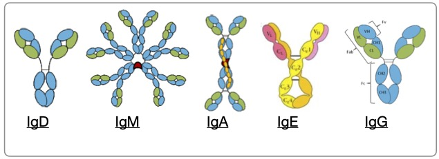

The Joy of Class Switching
B cells make
There are two major processes that B cells use to customize the antibodies that they make for specific
 Figure 1. Major immunoglobulin classes and representation of their structure.
It’s generally thought that class switching primarily occurs in germinal centers, thus, switching to a particular isotype must be driven by Tfh interactions and the local environment. There is evidence that CSR may occur prior to germinal center formation, for exmaple, direct visualization of adoptively transferred T and B cells into mice showed CSR occurring in splenic follicles, followed by migration of switched and unswitched B cells into pre-GC structures (Pape et al. 2003). This was also found very early on that Cy1 class-switch transcripts could be detected prior to GC formation, during B-T interactions that stimulate clonal expansion of B cells in the T zone of the spleen (Toellner et al. 1996).
(Roco et al. 2019) argue not only that CSR occurs prior to GC formation, but that CSR is actually decreased in GCs. They found that GLT-expressing B cells were visible in primary follicles prior to their maturation into GCs and that once the GC forms only a very minor population of cells still express GLT. Interestingly, expression of the CSR transcription factors Foxo1 and c-Myc that was present in pre-GC B cells undegoing CSR still persisted within the GC, despite loss of GLT expression.
Class switching is a permanent change for a B cell that cannot be undone. Modifications might be made, for example, the switching of IgA1 to IgA2 in response to bacterial TLR stimulation in the intestine (Cerutti 2008), but a switched B cell may never go back to its agnostic IgM/IgD state and, therefore, will never have the same switching potential as it once had. Only unswitched IgM memory B cells can fulfill this role.
CSR occurring outside germinal centers allows for more diverse class switching to occur (because there are so many different tissues and different environments), as the isotype being switched to is determined by a variety of stimulants that may be local. Can B cells class switch in tissues?
So how, exactly, does a distal or systemic inflammatory response dictate which isotype(s) will be chosen?
References
- (Cerutti 2008) Cerutti, Andrea. 2008. “The Regulation of IgA Class Switching.” Nat Rev Immunol 8 (6): 421–34. https://doi.org/10.1038/nri2322.
- (Pape 2003) Pape, Kathryn A, Valerie Kouskoff, David Nemazee, H Lucy Tang, Jason G Cyster, Lina E Tze, Keli L Hippen, Timothy W Behrens, and Marc K Jenkins. 2003. “Visualization of the Genesis and Fate of Isotype-Switched B Cells during a Primary Immune Response.” J Exp Med 197 (12): 1677–87. https://doi.org/10.1084/jem.20012065.
- (Roco 2019) Roco, Jonathan A, Luka Mesin, Sebastian C Binder, Christian Nefzger, Paula Gonzalez-Figueroa, Pablo F Canete, Julia Ellyard, et al. 2019. “Class-Switch Recombination Occurs Infrequently in Germinal Centers.” Immunity 51 (2): 337–50.e7. https://doi.org/10.1016/j.immuni.2019.07.001.
- (Toellner 1996) Toellner, K M, A Gulbranson-Judge, D R Taylor, D M Sze, and I C MacLennan. 1996. “Immunoglobulin Switch Transcript Production in Vivo Related to the Site and Time of Antigen-Specific B Cell Activation.” J Exp Med 183 (5): 2303–12. https://doi.org/10.1084/jem.183.5.2303.